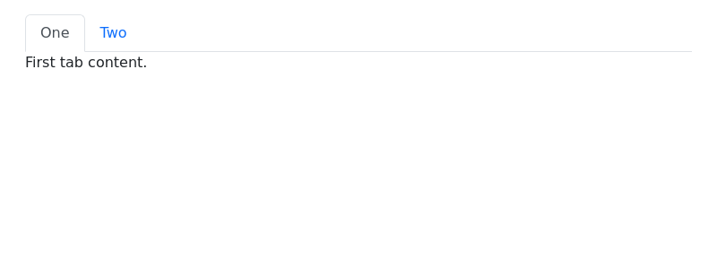
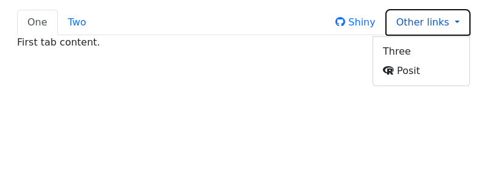
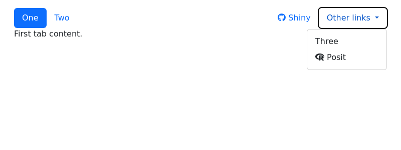
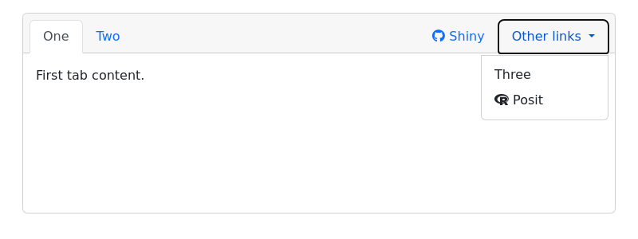
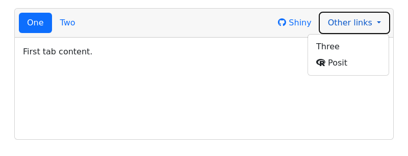
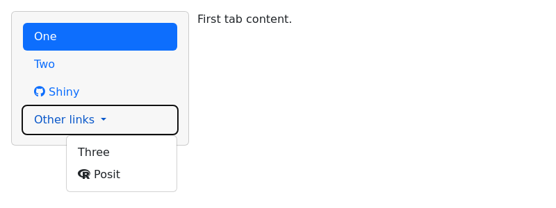
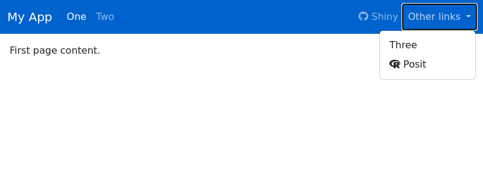

| navset {bslib} | R Documentation |
Render a collection of nav_panel() items into a container.
navset_tab(..., id = NULL, selected = NULL, header = NULL, footer = NULL)
navset_pill(..., id = NULL, selected = NULL, header = NULL, footer = NULL)
navset_pill_list(
...,
id = NULL,
selected = NULL,
header = NULL,
footer = NULL,
well = TRUE,
fluid = TRUE,
widths = c(4, 8)
)
navset_hidden(..., id = NULL, selected = NULL, header = NULL, footer = NULL)
navset_bar(
...,
title = NULL,
id = NULL,
selected = NULL,
sidebar = NULL,
fillable = TRUE,
gap = NULL,
padding = NULL,
position = c("static-top", "fixed-top", "fixed-bottom"),
header = NULL,
footer = NULL,
bg = NULL,
inverse = "auto",
collapsible = TRUE,
fluid = TRUE
)
navset_card_tab(
...,
id = NULL,
selected = NULL,
title = NULL,
sidebar = NULL,
header = NULL,
footer = NULL,
height = NULL,
full_screen = FALSE,
wrapper = card_body
)
navset_card_pill(
...,
id = NULL,
selected = NULL,
title = NULL,
sidebar = NULL,
header = NULL,
footer = NULL,
height = NULL,
placement = c("above", "below"),
full_screen = FALSE,
wrapper = card_body
)
... |
a collection of |
id |
a character string used for dynamically updating the container (see
|
selected |
a character string matching the |
header |
UI element(s) (tags) to display above the nav content. |
footer |
UI element(s) (tags) to display below the nav content. |
well |
|
fluid |
|
widths |
Column widths of the navigation list and tabset content areas respectively. |
title |
A (left-aligned) title to place in the card header/footer. If provided, other nav items are automatically right aligned. |
sidebar |
A |
fillable |
Whether or not to allow |
gap |
A CSS length unit defining the
|
padding |
Padding to use for the body. This can be a numeric vector (which will be interpreted as pixels) or a character vector with valid CSS lengths. The length can be between one and four. If one, then that value will be used for all four sides. If two, then the first value will be used for the top and bottom, while the second value will be used for left and right. If three, then the first will be used for top, the second will be left and right, and the third will be bottom. If four, then the values will be interpreted as top, right, bottom, and left respectively. |
position |
Determines whether the navbar should be displayed at the top
of the page with normal scrolling behavior ( |
bg |
a CSS color to use for the navbar's background color. |
inverse |
Either |
collapsible |
|
height |
Any valid CSS unit (e.g.,
|
full_screen |
If |
wrapper |
A function (which returns a UI element) to call on unnamed
arguments in |
placement |
placement of the nav items relative to the content. |
This first example creates a simple tabbed navigation container with two
tabs. The tab name and the content of each tab are specified in the
nav_panel() calls and navset_tab() creates the tabbed navigation
around these two tabs.
library(htmltools)
navset_tab(
nav_panel(title = "One", p("First tab content.")),
nav_panel(title = "Two", p("Second tab content."))
)

In the rest of the examples, we’ll include links among the tabs (or pills) in the navigation controls.
link_shiny <- tags$a(shiny::icon("github"), "Shiny", href = "https://github.com/rstudio/shiny", target = "_blank")
link_posit <- tags$a(shiny::icon("r-project"), "Posit", href = "https://posit.co", target = "_blank")
navset_tab()You can fully customize the controls in the navigation component. In
this example, we’ve added a direct link to the Shiny repository using
nav_item(). We’ve also included a dropdown menu using nav_menu()
containing an option to select a third tab panel and another direct link
to Posit’s website. Finally, we’ve separated the primary tabs on the
left from the direct link and dropdown menu on the right using
nav_spacer().
navset_tab(
nav_panel(title = "One", p("First tab content.")),
nav_panel(title = "Two", p("Second tab content.")),
nav_spacer(),
nav_item(link_shiny),
nav_menu(
title = "Other links",
align = "right",
nav_panel("Three", p("Third tab content")),
nav_item(link_posit)
)
)

navset_pill()navset_pill() creates a navigation container that behaves exactly like
navset_tab(), but the tab toggles are pills or button-shaped.
navset_pill(
nav_panel(title = "One", p("First tab content.")),
nav_panel(title = "Two", p("Second tab content.")),
nav_spacer(),
nav_item(link_shiny),
nav_menu(
title = "Other links",
align = "right",
nav_panel("Three", p("Third tab content")),
nav_item(link_posit)
)
)

navset_card_tab()The tabbed navigation container can also be used in a card() component
thanks to navset_card_tab(). Learn more about this approach in the
article about Cards, including
how to add a shared sidebar
to all tabs in the card using the sidebar argument of
navset_card_tab().
navset_card_tab(
nav_panel(title = "One", p("First tab content.")),
nav_panel(title = "Two", p("Second tab content.")),
nav_spacer(),
nav_item(link_shiny),
nav_menu(
title = "Other links",
align = "right",
nav_panel("Three", p("Third tab content")),
nav_item(link_posit)
)
)

navset_card_pill()Similar to navset_pill(), navset_card_pill() provides a pill-shaped
variant to navset_card_tab(). You can use the placement argument to
position the navbar "above" or "below" the card body.
navset_card_pill(
placement = "above",
nav_panel(title = "One", p("First tab content.")),
nav_panel(title = "Two", p("Second tab content.")),
nav_spacer(),
nav_item(link_shiny),
nav_menu(
title = "Other links",
align = "right",
nav_panel("Three", p("Third tab content")),
nav_item(link_posit)
)
)

navset_pill_list()Furthermore, navset_pill_list() creates a vertical list of navigation
controls adjacent to, rather than on top of, the tab content panels.
navset_pill_list(
nav_panel(title = "One", p("First tab content.")),
nav_panel(title = "Two", p("Second tab content.")),
nav_spacer(),
nav_item(link_shiny),
nav_menu(
title = "Other links",
align = "right",
nav_panel("Three", p("Third tab content")),
nav_item(link_posit)
)
)

page_navbar()Finally, page_navbar() provides full-page navigation container similar
to navset_tab() but where each nav_panel() is treated as a full page
of content and the navigation controls appear in a top-level navigation
bar.
page_navbar(
title = "My App",
bg = "#0062cc",
nav_panel(title = "One", p("First page content.")),
nav_panel(title = "Two", p("Second page content.")),
nav_spacer(),
nav_item(link_shiny),
nav_menu(
title = "Other links",
align = "right",
nav_panel("Three", p("Third page content.")),
nav_item(link_posit)
)
)
